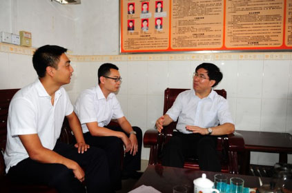

| 村名称 | 行政区划 | 村属性 | 地形地貌 | 村负责人 |
|---|---|---|---|---|
| 太平东村 | 广东省-清远市-阳山县-秤架瑶族乡 | 贫困村 | 山区 | 占江峰 |
| 行政区划 | |||||
|---|---|---|---|---|---|
| 村属性 | XXXXXXXXXX | 发展方向 | XXXXXXXXXX | 地形地貌 | XXXXXXXXXX |
| 村负责人 | 3456 | 村办公室电话 | XXX-XXXXXXX | 村委负责人职务 | XXX-XXXXXXX |
| 村官人数 | 3456 | B1自然村(村民小组)数（个） | 3456 | B2总户数（户） | 3456 |
| B2a贫困户数（户） | 3456 | B2b低保户数（户） | 3456 | B2c五保户数（户） | 3456 |
| B3总人口数（人） | 3456 | B3a贫困人口数（人） | 3456 | B3b低保人口数（人） | 3456 |
| B3c五保人口数（人） | 3456 | B3d少数民族人口数（人） | 3456 | B3e妇女人口数（人） | 3456 |
| B3f残疾人口数（人） | 3456 | B4劳动力人数（人） | 3456 | B4a外出务工人数（人） | 3456 |
| B5耕地面积（亩） | 3456 | B5a有效灌溉面积（亩） | 3456 | B4劳动力人数（人） | 3456 |
| B6a退耕还林面积（亩） | 3456 | B6b林果面积（亩） | 3456 | B6林地面积（亩） | 3456 |
| B8水域面积（亩） | 3456 | B9牲畜存栏数（头） | 3456 | B7牧草地面积（亩） | 3456 |
| 收入情况 | B10农民年人均纯收入（元） | 3456 | B11村级集体经济收入（万元） | 12332 |
|---|---|---|---|---|
| 社会保障 | B12参加城乡居民医疗保险人数 （人） |
3456 | B13参加城乡居民基本养老保险人数 （人次） |
12332 |
| B14获得医疗救助人次 （人） |
1234 | |||
| 村级道路畅通 | B15行政村到乡镇未 通沥青(水泥)路里程 （公里） |
3456 | B18自然村到行政村未通沥青(水泥)路里程（公里） | 12332 |
| B16行政村是否通客运班车 | 是 | B17自然村到行政村未通沥青(水泥)路村数（个） | 3456 | |
| 饮水安全 | B19未实现饮水安全户数（户） | 3456 | B20饮水困难户数（户） | 12332 |
| 农村电力保障 | B21未通生活用电的自然村数（个） | 3456 | B23未通生活用电的户数（户） | 12332 |
| B22未通生产用电的自然村数（个） | 是 | B24已通电自然村(20户以上)数（个） | 3456 | |
| 危房改造 | B25危房户数（户） | 3456 | ||
| 特色产业增收 | B26特色产业农民专业合作社（个） | 3456 | B26农民专业合作社个数 | 12332 |
| B27参加特色产业专业合作社的贫困户数（户） | 1212 | |||
| 乡村旅游 | B28开展乡村旅游的户数（户） | 3456 | B29乡村旅游从业人员数（个） | 12332 |
| B31经营农家乐户年均收入（元） | 1212 | |||
| 卫生和计划生育 | B32行政村卫生室个数（个） | 3456 | B33行政村执业(助理)医师（个） | 12332 |
| B34行政村公共卫生厕所个数（个） | 1212 | B35行政村生产生活垃圾集中堆放点个数（个） | ||
| 文化建设 | B36行政村文化(图书)室个数（个） | 3456 | B37通广播电视户数（户） | |
| 贫困村信息化 | B38通宽带户数（户） | 3456 | B39能用手机上网的户数（户） | 12332 |
| B40已通电自然村(20户以上)中通宽带的村数（个） | 1212 | B41通宽带的村小学个数（个） | 12323 | |
| 贫困村信息化 | B38通宽带户数（户） | 3456 | B39能用手机上网的户数（户） | 12332 |
| B40已通电自然村(20户以上)中通宽带的村数（个） | 1212 | B41通宽带的村小学个数（个） | 12323 | |
| B42行政村信息员（个） | 12121 | |||
| 雨露计划 | B43a已经参加雨露计划人数（人） | 3456 | B44a已经参加雨露计划人数（人） | 12332 |
| B43初中毕业未升入普通高中的新成长劳动力数（人） | 1212 | B44高中毕业未升入大学、专科学校的新成长劳动力数（人） | 12323 | |
| 扶贫小额信贷 | B45批复的扶贫小额信贷户数（户） | 3456 | B45a当年贷款户数（户） | 12332 |
| B45b逾期未还款户数（户） | 1212 | 12323 | ||
| 易地扶贫搬迁 | B46符合两不具备搬迁扶持条件，有搬迁意愿(2016-2018年)（户） | 3456 | B47符合两不具备搬迁扶持条件，有搬迁意愿(2016-2018年)（人） | |
| 党员情况 | B48中共党员数（人） | 3456 |
| 序号 | 驻村工作 队员姓名 |
政治面貌 | 证件号码 | 帮扶（派驻） 单位名称 |
单位隶属 关系 |
联系电话 | 驻村 开始时间 |
驻村 结束时间 |
是否队长 | 是否 第一书记 |
|---|---|---|---|---|---|---|---|---|---|---|
| 1 | 杨小风 | 党员 | 440015198552465314 | 佛冈县文广新局 | 县 | 18912345678 | 2016-01-01 | 2018-12-31 | 是 | 是 |
| 2 | 杨小风 | 党员 | 440015198552465314 | 佛冈县文广新局 | 县 | 18912345678 | 2016-01-01 | 2018-12-31 | 是 | 是 |
| 驻村干部签名： 张国平 | 村委负责人签名：詹江峰 | 制定日期：2015-07-26 |
|---|
按照县委、县政府扶贫开发“规划到户、责任到人”工作的部署，县委组织部、县民政局、县水务局、县民宗局从2013年至2015年对口帮扶游溪镇江背村委会。为了确实做好游溪镇江背村委的对口帮扶工作，着力改善江背村的生产生活条件，早日改变贫穷落后面貌，特制订本实施方案。
一、基本情况
江背村位于乳源县游溪镇东北部，乳桂线贯穿其中，是一个交通比较便利、农业耕地较为丰富，且适宜种植经济农作物的行政村。全村有8个自然村，总户数383户，总人口1408人，其中贫困户有94户315人（包括扶贫户77户，低保户12户，五保户5户）。全村林地面积900亩，耕地面积1280亩，其中水田1053亩，旱地227亩。新农保参保率为45.11%，新农合参保率为100%。2012年全村人均年纯收入是4803元
。2012年村集体经济收入约1.7万元。主要产业以种植香芋、水稻、西瓜、花生为主。
二、指导思想
全面贯彻落实党的“十八”大精神，以邓小平理论和“三个代表”重要思想为指导，深入贯彻落实科学发展观，按照“政府主导、社会参与、自力更生、开发扶贫”的方针，以贫困村、贫困农户、贫困人口为工作对象，以增加贫困农户收入和改善贫困村发展环境为目的，以“规划到户、责任到人”为基本要求，拓宽扶贫思路，创新扶贫方式，完善扶贫机制，落实扶贫单位、镇、村和贫困农户四方责任，调动各方力量，着力改善贫困村的发展环境，提高贫困人口的自我发展能力，加快脱贫致富奔康步伐。
三、目标任务
从2013年7月份开始，用三年的时间，通过“扶志气、扶智能、扶资金”，对江背村委及94户贫困户，其中有劳动能力的有80户，实施“规划到户、责任到人”扶贫开发工作责任制，确保贫困户实现稳定脱贫。根据全省近年农村经济和农民收入情况，全县初步以2015年全省农村人均纯收入15000元为基准推算各地农民增收目标，即有劳动力的贫困户人均纯收入达到6750元以上，贫困村村集体经济收入（经营性经济收入）超过5万元，使江背村的落后面貌得到根本性改变，被帮扶贫困户基本实现稳定脱贫。村“两委”组织建设达到领导班子好、党员队伍好、工作机制好、农村建设好、群众反映好的“五个好”标准。
四、具体工作措施
（一）核定对象，建档立卡。深入到江背村委8个自然村的贫困户家进行了调查摸底，对贫困户家庭的人口、居住状况、子女入学情况、耕地面积、家庭年人均收入、主要经济来源、劳务输出情况、新农村医疗合作参保情况、要求帮扶项目等内容，逐家逐户重新进行调查核实，并在村栏里张榜公布，接受群众监督。对经调查核实后确认的贫困户，其家庭的基本情况进行造册登记，同时报扶贫办备案，做到户有卡（对每户贫困户派发《贫困户卡》）、村有表（册）。
（二）改变江背村的落后面貌，实现“六有”的工作目标，即：有较强的领导班子、有科学的发展规划、有稳定的集体收入、有整洁的村容村貌、有民主的管理制度、有文明的社会风尚。同时通过以入股电站的方式，使江背村委的集体经济年纯收入达到5万元以上。
（三）对适宜发展种养业的农户，实行分类指导。发展特色种养业。因势利导，根据市场前景和贫困户的意愿，鼓励贫困户大力发展西瓜、香芋、红心番薯等种植项目。实行分类指导，上门提供种养实用技术。对参与种养业的贫困户，帮扶单位给予一定的生产启动资金。对不参与种养业的贫困户采取劳务输出的办法，拓宽贫困户收入的渠道。
（四）抓好基础设施建设。积极争取有关资金，认真抓好江背村的基础设施建设：一是黄泥潭河提为主的水利建设，兴修水圳，维修陂头，改善江背1200亩农田的灌溉，增加贫困户收入；二是300人以上的自然村村道全部实现硬底化以及对村容村貌进行整治，给群众营造美好的生活环境。三是帮助解决江背村群众饮水难问题。
（五）技能培训
。组织对有意愿外出务工的贫困户劳动力进行技能培训，实施转移就业。计划2013—2015年培训300人次，让贫困户劳动力每人掌握1-2门技术，促进贫困户创业脱贫致富。
（六）支持落实各项农村保障政策。推动落实各项农村政策。进一步推动当地落实贫困户最低生活保障政策，将尚未脱贫的人口纳入最低生活保障范围，开展医疗扶贫，支持让每个贫困人口100%参加农村合作医疗和新型农村养老保险。
（七）危房改造方面。完成上级下达给江背村委会低收入贫困户危房改造任务数，70户。2013年完成20户，2014年完成20户，2015年完成30户。
（八）实施好贫困家庭子女奖学金政策。帮扶期间，针对江背贫困家庭的学龄青少年出台措施，义务教育期间需住校的每人每学年补助600元，就读高中的贫困家庭子女每人每学年补助800元，就读高校的贫困家庭子女补助1000元生活特别困难的视情况而定。
五、工作要求
（一）提高认识，加强指导。
扶贫工作人员要统一思想，提高认识，把扶贫纳入日常工作议程。要求各单位领导一年至少3次对挂点扶贫村进行调研指导工作，各帮扶责任人每年至少6次下乡进行指导，并保持与挂点帮扶村的电话沟通指导。
（二）明确任务，责任到人。扶贫开发“规划到户责任到人”工作，涉及面广、工作量大，帮扶干部对所帮扶贫困户负有脱贫的直接责任，要认真履行职责，积极主动与帮扶对象沟通联系，充分利用各方面有利条件，从资金、技术、项目、信息等方面扶持贫困户，确保帮扶措施和帮扶任务落实到位。
（三）加强协调，扎实工作。帮扶工作领导小组要加强与当地政府及县扶贫办的沟通、协调和配合，及时研究和解决工作中出现的新情况、新问题，共同做好帮扶工作。此外，要充分调动贫困人口的积极性，让贫困户主动参与扶贫开发工作。
（四）成立行业生产经济协会。在江背村成立行业生产经济协会，提高扶贫生产水平，拓宽产品销售渠道，确保贫困户通过扶贫项目实现增收。
（五）建立动态档案和台账。对确定的贫困户逐户登记造册，建立统一的《帮扶记录卡》台帐，实行动态管理，及时做好电脑信息录入管理工作，按时报送月、季、年报表等有关材料。
| 总投入资金（单位：万元） | 村总投入资金（单位：万元） | 户总投入资金（单位：万元） |
|---|---|---|
| 2300 | 1000 | 1300 |
块名称 |
贫困村数 |
总投入 扶持资金 （万元） |
村总投入资金 |
户总投入资金 |
|
||||||||||||||||||||||||||||||||||||||||||||||||||||||||||||
|---|---|---|---|---|---|---|---|---|---|---|---|---|---|---|---|---|---|---|---|---|---|---|---|---|---|---|---|---|---|---|---|---|---|---|---|---|---|---|---|---|---|---|---|---|---|---|---|---|---|---|---|---|---|---|---|---|---|---|---|---|---|---|---|---|---|
| 本地帮扶 | 13 | 108.2093 |
108.2093 | 1.7240 |
|||||||||||||||||||||||||||||||||||||||||||||||||||||||||||||
|
珠三角地市单位帮扶 |
13 | 108.2093 | 108.2093 | 1.7240 | |||||||||||||||||||||||||||||||||||||||||||||||||||||||||||||
|
省直中直驻粤帮扶 |
13 | 108.2093 | 108.2093 | 1.7240 | |||||||||||||||||||||||||||||||||||||||||||||||||||||||||||||
| 合计 | 13 | 108.2093 | 108.2093 | 1.7240 |
2016-5-23 12:20:20 张三2016年5月23日，肇庆市委赖泽华书记视察了怀集县连麦镇文岗村扶贫工作 |
||
2016-5-23 12:20:20 张三2016年5月23日，肇庆市委赖泽华书记视察了怀集县连麦镇文岗村扶贫工作，与南方航空集团驻村干部进行亲切交谈。赖泽华书记听取了南航驻村干部对贫困户发自内心的 有感认识和初步扶贫想法，对南航的扶贫工作给予了高度评价，强调扶贫工作要发自内心，要把贫困户作为知心人来进行帮扶。  |
||
2016-5-23 12:20:20 张三2016年5月23日，肇庆市委赖泽华书记视察了怀集县连麦镇文岗村扶贫工作 |
||
2016-5-23 12:20:20 张三2016年5月23日，肇庆市委赖泽华书记视察了怀集县连麦镇文岗村扶贫工作，与南方航空集团驻村干部进行亲切交谈。赖泽华书记听取了南航驻村干部对贫困户发自内心的 有感认识和初步扶贫想法，对南航的扶贫工作给予了高度评价，强调扶贫工作要发自内心，要把贫困户作为知心人来进行帮扶。
|
||
2016-5-23 12:20:20 张三2016年5月23日，肇庆市委赖泽华书记视察了怀集县连麦镇文岗村扶贫工作 |
||
2016-5-23 12:20:20 张三2016年5月23日，肇庆市委赖泽华书记视察了怀集县连麦镇文岗村扶贫工作，与南方航空集团驻村干部进行亲切交谈。赖泽华书记听取了南航驻村干部对贫困户发自内心的 有感认识和初步扶贫想法，对南航的扶贫工作给予了高度评价，强调扶贫工作要发自内心，要把贫困户作为知心人来进行帮扶。
|
||
|
2016年5月23日，肇庆市委赖泽华书记视察了怀集县连麦镇文岗村扶贫工作 |